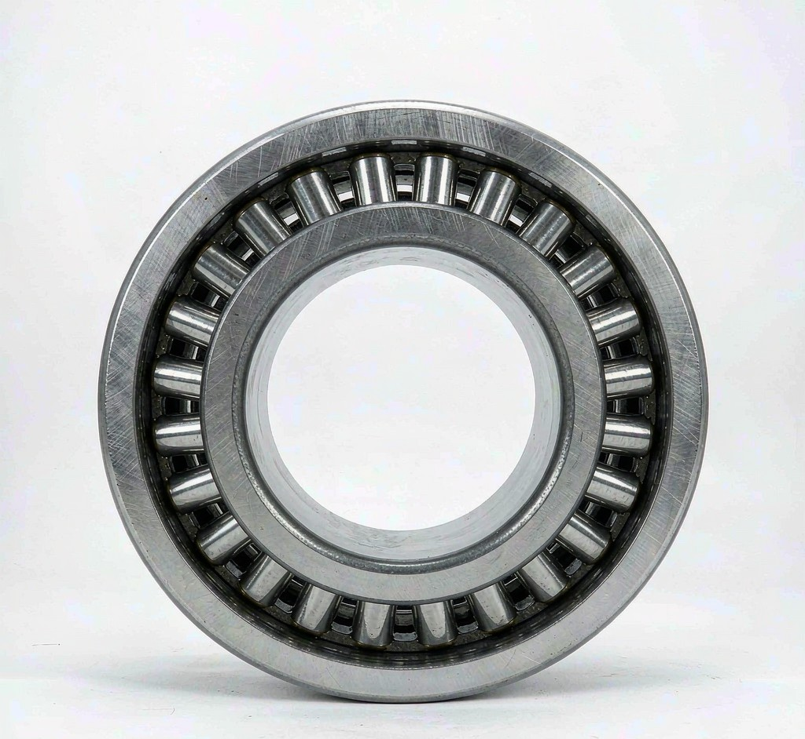

Séries nesta categoria
3 séries · 230 modelos listados · gama completa sob consulta


Rolamentos de rolos cilíndricos de quatro carreiras
10 modelos de amostra listados · o restante conforme desenho
Ver modelos